ash
ash
A modern terminal text editor
View the Project on GitHub akashnag/ash
$ sudo pip3 install ash-editor


ash is a simple and clean terminal-based text editor, that aims to be easy to use with modern key-bindings. It is capable of handling multiple files simultaneously and has a wide array of modern features. Here is a picture of ash editing this README file:

ash is written in Python 3.8 using the curses library.
Table of Contents
Note: The latest version is always the nightly build and the information presented here always refers to that build only. Unless you have any specific reason not to, you should always download the nightly build to get the latest features/updates/bug-fixes.
Features
The following is a list of features available in ash (Note: all these features are available in the nightly build but may not be available in the stable release):
- Easy to use, clean and intuitive interface
- Common key bindings (Help on F1, Arrow keys for movement, Shift+Arrow/Home/End/PgUp/PgDown for selecting text, cut/copy/paste using Ctrl+X/C/V, undo/redo using Ctrl+Z/Y, find/replace/goto using Ctrl+F/H/G, etc.)
- Support for remapping key bindings to your taste
- Common editor features such as undo/redo, line numbers, find-replace, cut-copy-paste, etc.
- True support for wrapping (both hard & soft) with intuitive cursor movements along wrapped text
- Auto-backup
- Support for Unicode
- Project mode (opening a directory instead of individual files)
- Complete session (for projects) and undo persistence (turned on for projects opened directly from command-line)
- Live search
- Support for search/replace in all open files
- Support for searching using regular expressions
- Auto-indentation, Select+Tab/Shift-Tab to increase/decrease indent
- Auto insertion of matching braces/quotes and auto-enclosure when text is selected and braces/quotes are typed
- Support for unlimited splits per tab (subject to screen size) and support for unlimited tabs
- Support for various text-encodings
- Checks (live) and reloads (if user permits) files which have been modified externally
- Selection highlighting (highlights text under selection wherever they occur in the document)
- Color scheme customization
- View list of recent files, view project explorer (in project mode)
- Syntax highlighting (limited)
- Git integration (shows untracked, modified files, etc.)
- Multiple Cursors
- Command palette
- Basic mouse support
Installation
For Linux users, follow these steps to get ash on your system:
Prerequisites
You need certain packages and Python 3 itself to download and run ash:
$ sudo apt install git
$ sudo apt install xclip
$ sudo apt install python3
$ sudo apt install python3-pip
Installing ash
You can either directly install the latest stable release using:
$ sudo pip3 install ash-editor
Alternatively, you could download the latest stable/nightly release by clicking the Download button at the top-left corner of this page which will download a .tar.gz file.
Once downloaded, extract it a folder, and once inside that folder (make sure it contains the file setup.py), open up your terminal and execute the following:
$ sudo pip3 install .
To run ash make sure you have :$HOME/.local/bin appended to your $PATH variable in the file ~/.bashrc. To execute ash, see the Usage section.
Uninstalling ash
To uninstall ash you can use:
$ sudo pip3 uninstall ash-editor
Prebuilt binaries
Since ash is still under development, prebuilt binaries are not yet available. You can use PyInstaller or similar tools to build one for your system.
Colors
If you are using the default Ubuntu terminal, to enable 256 make sure your TERM variable is set to xterm-256color. After ash runs for the first time, it creates a theme.txt file inside your home directory. You can edit that file directly to change how ash looks on your system. The RGB triplets listed in that file range from 0--255. If you want to reset ash to its default colors, delete the configuration file using: rm ~/.ash-editor/theme.txt.
Usage
Once you have downloaded the ash source code, and set it up as detailed above, you are ready to use it.
NOTES:
- If you have not updated your path variable, you must specify the full path to the ash binary.
- Your terminal resolution should be at least 102 (width) x 22 (height). Opening the editor in a lower resolution may unexpectedly crash the application. This requirement is necessary to properly display the dialog-boxes.
To run ash:
$ ash path/to/file.txt
or, to open an empty buffer:
$ ash
or, to open a project (directory):
$ ash path/to/directory
See the Key Bindings for help on how to navigate in ash.
Contributing
If you find any bugs, please report them here.
You can also join the Gitter chat for dicussions about the future development roadmap for ash.
Screenshots


 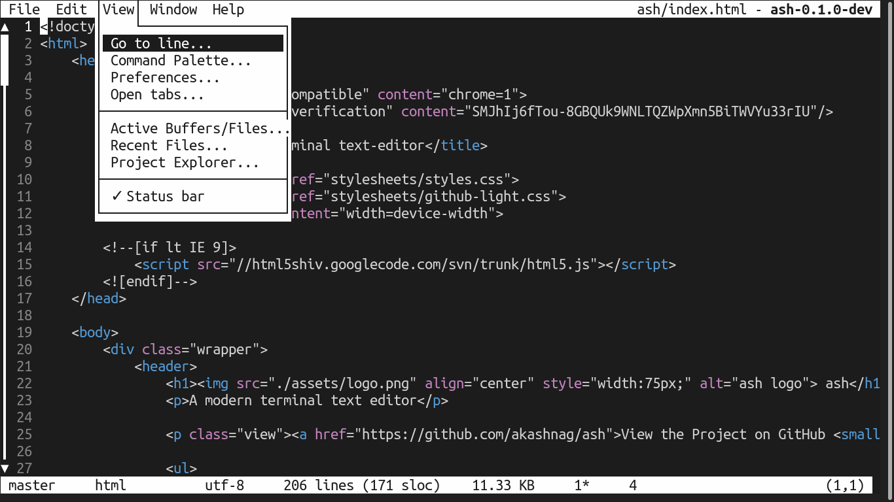
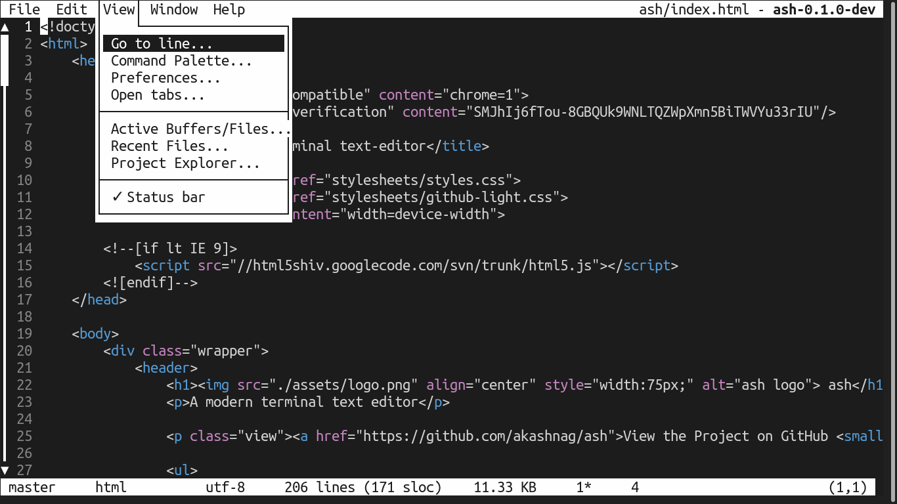

 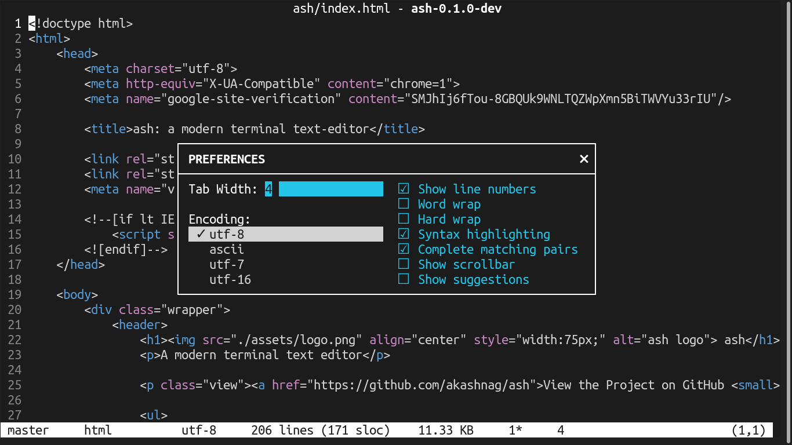
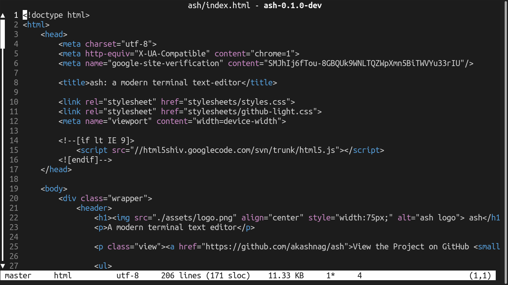
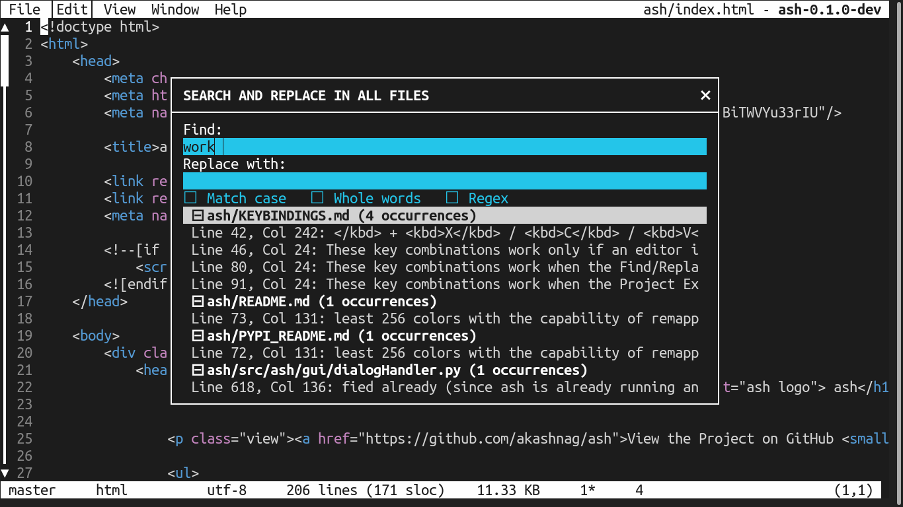
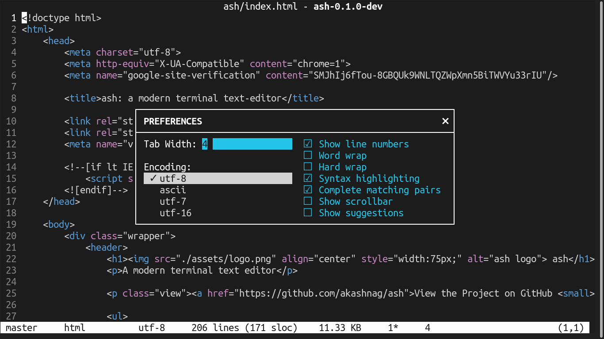
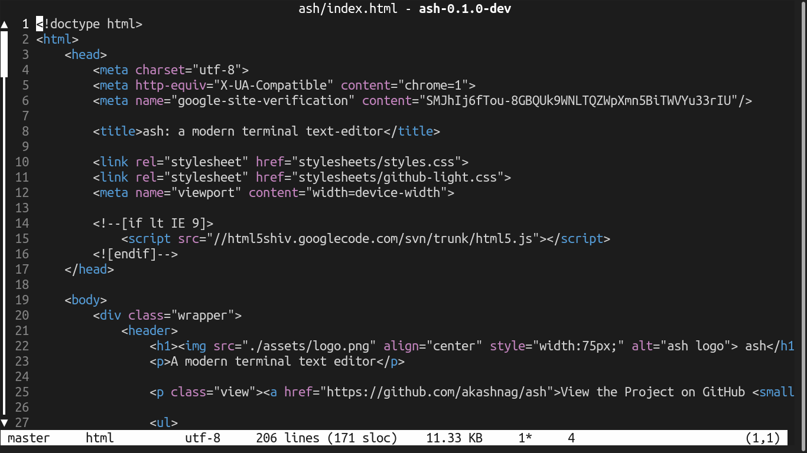
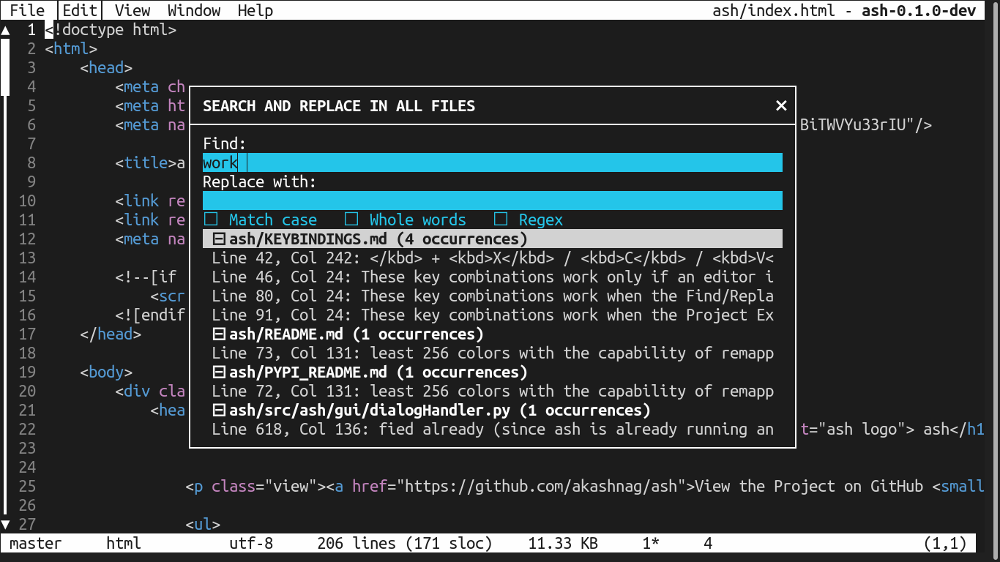


 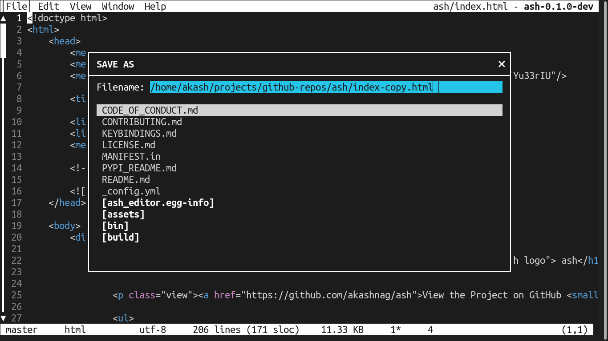
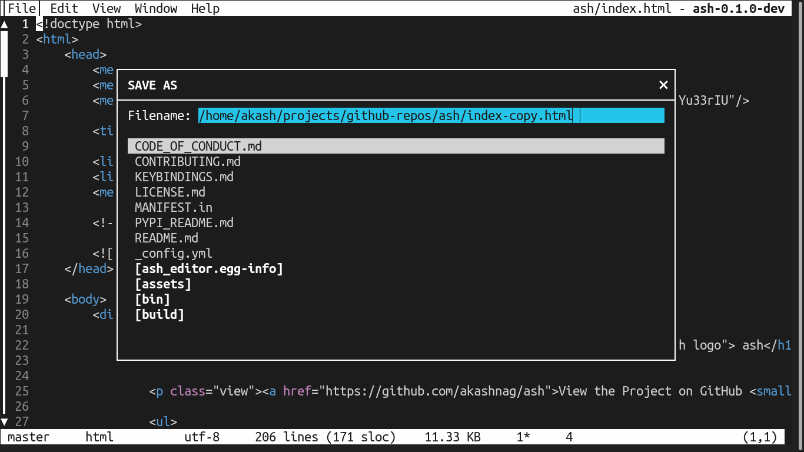
 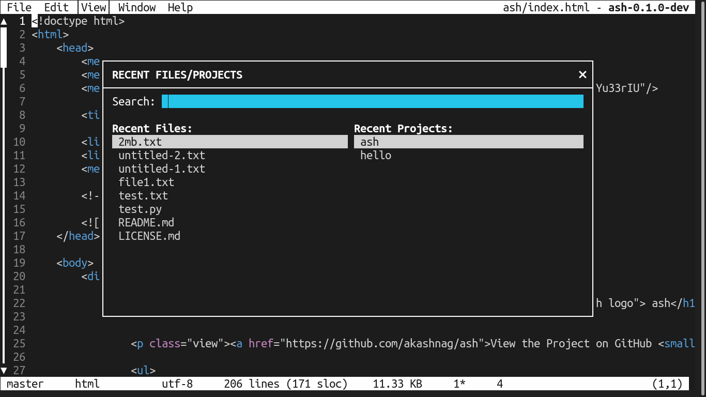
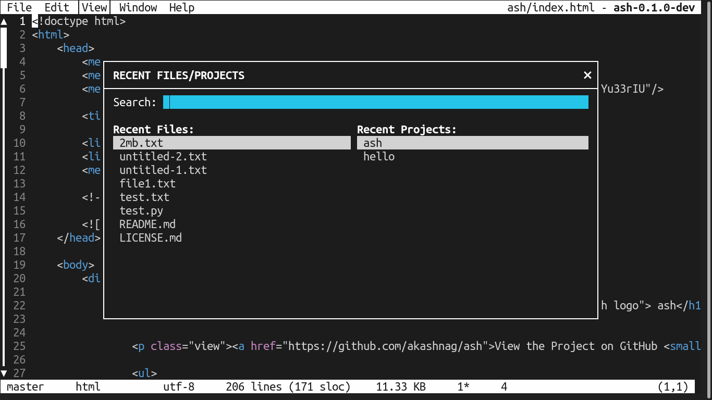

 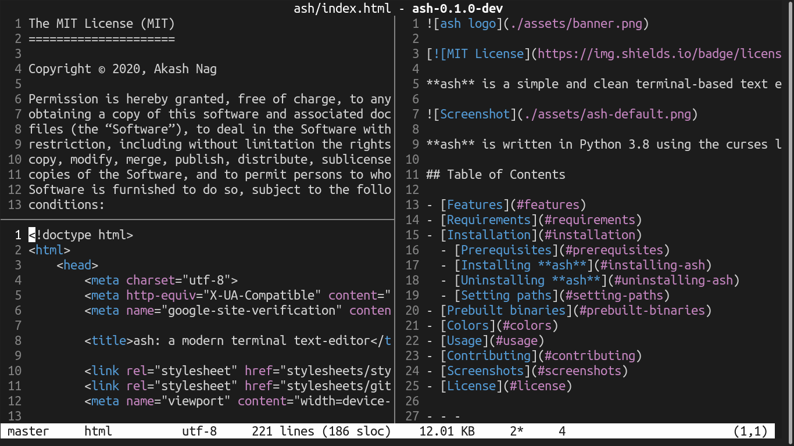
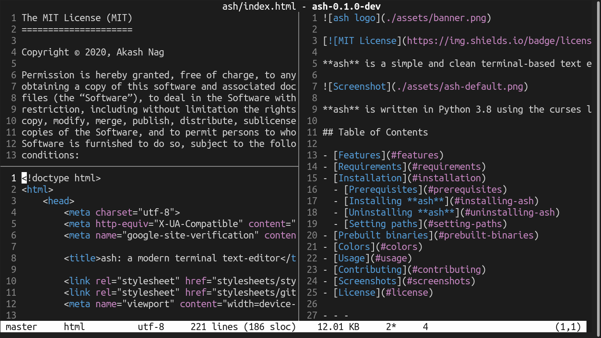

License
Copyright © Akash Nag. All rights reserved.
Licensed under the MIT license.